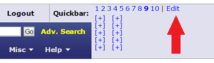
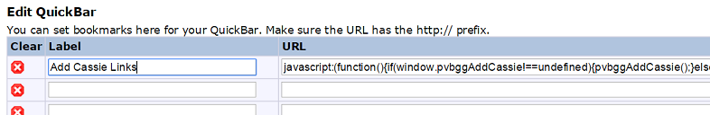
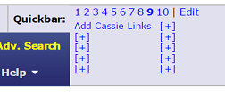
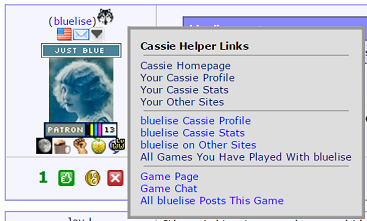

Bookmarklets are "little" snippets of JavaScript code that reside inside of a bookmark or similar and somehow modify or use the current web page that you're viewing. These are specifically made to modify pages on BoardGameGeek.com.
In the upper-right of any BGG page is the QuickBar. Click Edit, and let's make a new link in here. (This can also be done as a bookmark, favorite, or otherwise, but I'll just talk about the QuickBar here.)

Highlight all of the code in this block and copy it (Ctrl+C on Windows):
javascript:(function(){if(window.pvbggAddCassie!==undefined){pvbggAddCassie();}else{document.body.appendChild(document.createElement('script')).src='http://petevasi.github.io/bggBookmarklets/addCassie.js?';}})();
Give your link a name and paste in the JavaScript code into the URL field:

Go to a page where the link will have an effect and click on it. In this case, visit a PBF Werewolf game thread.

The "Add Cassie Links" bookmarklet puts a little icon next to each user's post in the thread. Clicking on the icon will open a window with handy Cassie Werewolf-related links.

Add an icon by each user's forum posts with a menu that has handy Cassie links for PBF Werewolf.
javascript:(function(){if(window.pvbggAddCassie!==undefined){pvbggAddCassie();}else{document.body.appendChild(document.createElement('script')).src='http://petevasi.github.io/bggBookmarklets/addCassie.js?';}})();
A work-in-progress, I'm seeing if I can just hack existing BGG pages to be mobile-friendly.
javascript:(function(){if(window.pvbggMobilize!==undefined){pvbggMobilize();}else{document.body.appendChild(document.createElement('script')).src='http://petevasi.github.io/bggBookmarklets/mobilize.js?';}})();
Sure! Head to the BGG Bookmarklets GitHub page and start your own fork.